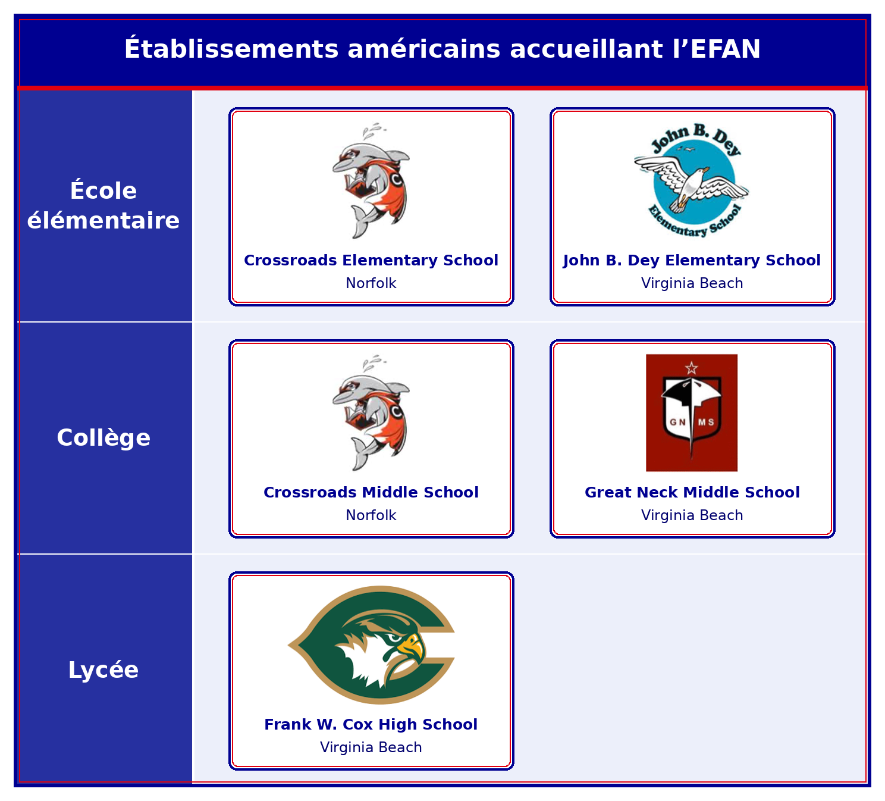

Enrollment takes place in three steps. You complete steps 1 and 3, and the FASN Director takes care of step 2.
| Step | Who does it? | When and how? |
|---|---|---|
| 1. Enrollment at FASN | You | Online, from France, from April 1 |
| 2. Enrollment with the CNED | The FASN Director | Late June or early July, with nothing to do on your part |
| 3. Enrollment in the American school | You | Online pre-registration, then in-person registration with your child, by appointment set by the American school, when you arrive in Norfolk or Virginia Beach |
Step 1: enroll your child at FASN
How it works
Enrollment is done online and can be completed from France. Enrollment for the 2026-2027 school year is now open: to get started, simply click the “Registration link” button at the bottom of this section. Late or mid-year applications are also possible, subject to available places and a review of each application.
When is enrollment final?
Enrollment is considered complete when two conditions are met: all required documents have been completed and submitted to the school administration, and the applicable fees have been paid.
Documents to provide
For all students, the application must include the school rules, the code of conduct, the acceptance of terms and the financial regulations, duly completed and signed. In addition, each level requires the following documents:
Elementary school
- report cards from the past three years, where possible;
- the 2026 third-term report card, as soon as you receive it.
Middle school
- a copy of the student’s passport, in PDF format;
- report cards from the past three years;
- the 2026 third-term report card, as soon as you receive it.
High school
- a copy of the student’s passport, in PDF format;
- report cards from 8th grade (quatrième) onwards;
- the 2026 third-term report card, as soon as you receive it;
- for enrollment in 10th grade (seconde): the certificate of success in the Diplôme national du brevet, as soon as you receive it;
- for enrollment in 12th grade (terminale): the results of the épreuves anticipées de français (early French exams), as soon as they are published.
For all students, please make sure that your child’s vaccinations are up to date.
The forms
Please read these forms carefully before completing them. All documents must be submitted for enrollment to be finalized. If you have any questions or need help, our office is happy to assist.
Registration linkSchool rulesCode of conductAcceptance of termsFinancial regulations
Step 2: enrollment with the CNED
The FASN Director enrolls your child with the CNED at the end of June or the beginning of July. You do not need to do anything.
Step 3: enroll your child in the American school
How to proceed
You can pre-register online before you arrive. The actual registration is done in person, with your child, as soon as you arrive in Norfolk or Virginia Beach. The American school will then give you an appointment. For more information, see the “Enrollment in the American schools” page.
Choosing subjects (middle school and high school)
With the help of the school counselor, you will then choose the subjects your child will take in the American curriculum.
Good to know: the case of high school
In American high school, students earn credits towards the high school diploma. The French report cards allow Virginia Beach City Public Schools (VBCPS) to grant your child credits for the subjects with sufficient results. You must therefore provide them as soon as you arrive. VBCPS now asks for them to be submitted in French: they are then translated by the World Language Office.
The American schools that host FASN


Key points
- You enroll your child at FASN online, from France. You then pre-register them online with the American school, and register them in person, by appointment, when you arrive. Enrollment with the CNED is handled by the FASN Director.
- For high school, the French report cards are essential to earn credits towards the American diploma.